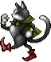

TRAMA
El contexto histórico del juego es desconocido para el jugador en el comienzo, pero durante la primera mitad del juego (particularmente tras el final de esa parte), los personajes comienzan a entender la situación reinante. Mil años antes de los eventos del juego, tres diosas que representaban todo el poder de la magia existente lucharon entre sí en una guerra. Esta contienda esparció enormes cantidades de magia por todo el mundo, transformando a todo humano que fue afectado por ellas en unas criaturas mágicas conocidas como "Espers," bajo el control de las diosas. Las tres diosas, llamadas la Tríade marcial, usaron a los espers como soldados en aquella guerra entre los tres, por lo que el conflicto pasó a denominarse la "Guerra de los Magi". Finalmente, las diosas se dieron cuenta de que aquella guerra no hacía más que perjudicar a todos, y queriendo reparar el daño que hicieron, devolvieron la libertad a los espers y se convirtieron a sí mismas en piedra. Los Espers se asegurarían de que permaneciesen selladas y su poder no se desatase de nuevo. Cuando la guerra acabó, los humanos supervivientes y los espers eran muy diferentes en apariencia, gustos y forma de vida. Por tanto, los espers se fueron a vivir a otra dimensión, llevándose consigo las estatuas de las diosas y sellando la entrada entre su mundo y el de los humanos.

Castillo Antiguo después de la Guerra de los Magi.

Castillo Antiguo durante la Guerra de los Magi.

Reunión entre Espers y Humanos

La Tríade Marcial
Gradualmente, la raza humana fundó una sociedad basada en la tecnología y la Guerra de los Magi pasó a ser una leyenda. En la actualidad, la tecnología más poderosa está en manos del Imperio, un país dictatorial, expansivo y cruel, regido por el Emperador Gesthal y sus generales, Kefka, Leo Cristophe y Celes Chere. Aproximadamente dieciocho años antes de los acontecimientos del juego, la barrera entre el mundo humano y la dimensión de los espers se debilitó y una mujer la atravesó por accidente. A pesar de que muchos de los espers desconfiaran de ella y creyesen que los humanos no pudiesen coexistir con los espers, uno llamado "Maduin" cree que deberían intentarlo antes de juzgar. La mujer, cuyo nombre es Madeline se queda en el mundo de los espers, y pronto tiene una hija con Maduin, llamada "Terra". Entonces Gestahl, llevado por su ambición de obtener el legendario poder de los espers, avanza a través de la debilitada barrera y lanza un ataque en un intento por atrapar a la mayor cantidad posible de Espers. Antes del intento desesperado del líder de los espers de invocar un hechizo que envía a través del portal dimensional a las fuerzas de Gestahl, muchos espers son capturados, y Maduin, su esposa, y una Terra bebé son atrapados en el hechizo. Maduin y su hija son capturados, mientras que su esposa muere.

El emprador Gestahl con los 3 generales (Kefka, Leo y Celes) y Terra

Barrera que separa el mundo humano del mundo esper

Maduin encontrando a Madeline en el mundo esper tras atravesar la barrera
Gestahl capturando a Maduin y Terra
Usando a los espers como fuente de poder, Gestahl inició un programa de desarrollo para combinar magia con maquinaria e infundir a los humanos sus poderes mágicos, el resultado fue una tecnología conocida como "Magitek." El Imperio alojó este concepto de Magitek en grandes vehículos mecánicos conocidos como "Armaduras Magitek", que permitían a un soldado usar el poder de la magia. Además, Kefka fue modificado con magia, volviéndose el primer prototipo de una nueva línea de "Súper soldados" llamados "Guerreros Magitek", que posteriormente incluiría a Celes Chere. Este procedimiento aún estaba en la fase de desarrollo, y como resultado, la cordura de Kefka fue severamente dañada. Otro invento Magitek fue la "Corona de la Esclavitud", un aparato que permite controlar a una persona. Cuando Terra creció, El Imperio uso el aparato para controlar sus acciones y usarla como un arma. Sumando el potencial Magitek con sus habilidades mágicas naturales, al inicio del Juego, El Imperio se encuentra en el camino de redescubrir el potencial completo de la Magia y reabrir el Portal al Mundo de Los Espers. Mientras tanto, al régimen del Imperio, se le oponen los Replicantes, un grupo de rebeldes que buscan derrocar al Imperio y liberar sus territorios.

Un soldado en armadura Magitek

Kefka maltratando a Celes por su locura

Kefka poniéndole a Terra la Corona de la Esclavitud

Reunión de Los Replicantes
ARGUMENTO
Final Fantasy VI se inicia con Terra Branford participando en una búsqueda Imperial en Narshe, buscando un Esper congelado, recién desenterrado (después lo identificarían como Tritoch) encontrado en las minas de la ciudad. Posteriormente, durante la búsqueda, sus controladores son asesinados y el Control Imperial sobre ella se rompe, pero es incapaz de recordar nada acerca de su pasado. Locke Cole, un ladrón "Cazador de Tesoros", promete protegerla hasta que recupere la memoria y después de ayurdarla a escapar, la lleva al escondite de los Replicantes, un grupo de milicianos que se oponen al Imperio. Durante el camino, ellos irán al Reino de Figaro y conocerán a Edgar Roni Figaro, El Rey, y su hermano, Sabin Rene Figaro, quienes se unirán al grupo. Banon, líder de los Replicantes, preguntara a Terra si los ayudara con sus habilidades en contra del Imperio y ella aceptara.
Tan pronto como la resistencia se prepara para regresar a Narshe a investigar el esper congelado, el Imperio inicia la invasión del cercano pueblo de Figaro del Sur. Locke se dirige al pueblo a tratar de detener el avance del Imperio, mientras que el resto del grupo recorre su camino a través del río Lete. Sin embargo, estos se ven obligados a separarse después de una batalla con Ultros, el auto proclamado "REY DE LOS PULPOS" y un antagonista recurrente, por lo que varios de los miembros de los Replicantes a encontrar su camino hacia Narshe a través de tres diferentes escenarios controlados por el jugador.
Eventualmente, el grupo original se reunirá en Narshe. Locke llegará con Celes Chere, una de las Generales del Imperio, quien será salvada por el de ser ejecutada por contarvenir las prácticas del Imperio. Sabin estará acompañado de Cyan Garamonde, cuya familia será asesinada durante la estancia que el Imperio estableció sobre el Castillo de Doma cuando Kefka ordenó envenenar los depósitos de agua, y Gau, un niño salvaje encontrado en el Pastizal. En Narshe, los Replicantes se preparan para defender el Esper del Imperio. Después de que el jugador haya detenido la invasión Imperial, Terra se acercará al esper, lo que le provocara una trasformación en un ser similar a un esper. Después de esto, ella se alejará volando, confusa y horrorizada por su propia transformación.
Los Replicantes iniciaran la búsqueda de Terra y eventualmente se dirigirán a la ciudad de Zozo, donde ella se encuentra conmocionada por su aparente existencia como esper. Ahí conocerán al esper Lamú, que les dice que si liberan a otros espers de "Vector", la Capital Imperial, podrían encontrar a alguno que los ayude con Terra.
Vector se encuentra en el continente del Sur, donde el Imperio no permite el acceso por mar, por lo que los Replicantes se dirigen a la Mansión de la Opera y reclutan a Setzer Gabbiani, quien es conocido por tener el último barco volador del mundo, El Blackjack. Ellos viajaran hacia Vector y tratarán de rescatar a varios Espers, entre los cuales está Maduin, quien rebela ser el padre de Terra. Entonces, los espers deciden dar sus vidas para transformarse en magicitas —la cristalizada forma que toma su esencia al morir y que permite a otros usar sus poderes— como lo comprobarán los Replicantes. Antes de que el grupo pueda escapar, Kefka llega causando entre los Replicantes, incluyendo en Locke, una duda momentánea sobre la lealtad de Celes, lo que la inundará de tristeza. Como prueba de su lealtad, ella se quedará cubriendo la retirada del equipo mientras escapan.
El resto del grupo regresará a Zozo, para enseñarle a Terra la magicita de su padre, lo que mostrará eventos del pasado y hará que se acepte así misma como la hija mestiza de Maduin y una mujer. Después de reunirse con Terra, los Replicantes deciden que es momento de lanzar un ataque masivo contra el Imperio, y Banon Pregunta a Terra si tratara de buscar a los Espers para pedirles su apoyo. Terra logra hacer el contacto, y observa que los espers, al enterarse de la muerte de los que habían sido capturados por el Imperio, se enfurecen y entran al mundo humano, destruyendo Vector.
Al llegar los Replicantes a la capital, encuentran al Emperador Gestahl quien afirma no desear continuar con la lucha, invitando a los Replicantes a un banquete para negociar la paz. Gestahl pregunta a Terra si podría hablar con los espers en su nombre, a lo que ella acepta. Guiados por Locke, Shadow (un ninja a sueldo) y los Generales Celes y Leo, el jugador deberá guiar a Terra a la villa de Thamasa en busca de los espers. En la villa, conocerán a Strago Magus y su nieta, Relm Arrowny, que se unirán a la búsqueda después de salvar a Relm de un incendio.
Enseguida se encuentran a los Espers calmados y Terra les convence para aceptar la tregua de Gestahl. Sin embargo, durante las negociaciones, Kefka agrede a los Espers, matando a los que aún seguían vivos para apoderarse de sus magicitas. Además, asesina al General Leo, el cual está consternado por las prácticas desonestas de Kefka, mientras intentaba defender a los Espers. En una reunión de los Replicantes, Edgar comentó que le habían pegado el chivatazo de que todo era una sucia estratagema del emperador para apoderarse de las Magicitas y de la tríade marcial, ahora sin sellar. Kefka y Gestahl viajaron través del portón al mundo de los Espers, encontrando la Tríade marcial, desprendiéndose de la tierra el continente que da lugar a la entrada de los espers y lanzado hacia el aire formando un continente flotante. Los Replicantes hacen todo lo posible para evitar la catástrofe, pero a pesar de todo, no pudieron hacer absolutamente nada para que Gestahl y Kefka consiguiesen obtener el poder de las estatuas. Una vez conseguido, Kefka traiciona y elimina a Gestahl y cambia las estatuas de su posición original, alterando el equilibrio mágico que las unía, causando una debacle en toda la superficie de la tierra, separándose gran parte de las tierras continentales. Mientras escapaban, los Replicantes fueron separados cada uno por un lado cuando se quebraba el barco volador de Setzer.
Un año después, Celes despierta de un coma en una isla desierta, junto a Cid, y se percata de la destrucción del mundo por parte de Kefka. Gran parte de la población humana había perecido y la fauna y la flora está muriendo lentamente por una enfermedad para acentuar la desesperación de la humanidad. Celes abandonó la isla para intentar reunirse con la mayor cantidad de camaradas posible. Uno por uno, a medida que exploraba el mundo se iba reencontrando a cada vez más, con suerte seguían todos con vida, además de encontrar nuevos compañeros como Gogo y Umaro. Una vez reunidos, los Replicantes lanzaron una nueva ofensiva contra Kefka, usando el Halcón —un barco volador perteneciente a la desaparecida amiga de Setzer— para infiltrarse en la Torre de Kefka. Dentro, Los Replicantes lucharon contra todas sus defensas y destruyeron las tres estatuas, la fuente de los nuevos poderes de Kefka. Cuando fueron destruidas, pese a ser la fuente de toda la magia, no causó ninguna reacción visible, se descubre que Kefka había drenado todo el poder de las estatuas, convirtiéndose él en toda la fuente de poder mágico.
En el último combate contra Kefka, los Replicantes consiguieron derrotarlo, pero ya que el poder de todas las magicitas había ido a residir a él, la torre empezó a desmoronarse. Terra saca a los personajes pero se comienza a debilitar debido a su mestizaje. Sin embargo, antes de que la magicita de Maduin se rompa, su espíritu le informa que puede sobrevivir gracias a la manifestación de su parte humana. El final concluye con todos escapando de la torre de Kefka y el resto de las comunidades del mundo al borde de la ruina, empiezan a prosperar.
PERSONAJES
TERRA BRANDFORD
Mitad humana y mitad esper, pasó la mayor parte de su vida como una esclava del Imperio a causa de sus poderes. Perseguida por sus anteriores captores después de que fuera liberada por un esper congelado en Narshe, se unió a Los Replicantes para escapar del imperio y averiguar por qué es capaz de utilizar la magia.
LOCKE COLE
Cazador de tesoros y simpatizante de la rebelión. Tiene un pasado bastante trágico, aunque normalmente se muestra como un hombre muy alegre, extrovertido y carismático. Él es quien ayuda a Terra a escapar del imperio y la introduce en el grupo "Los Replicantes". Su habilidad especial es robar, que le permite conseguir objetos burlando a sus enemigos.
EDGAR RONI FÍGARO
Un mujeriego consumado y el rey de Fígaro, quien se dice leal al Imperio mientras secretamente suministra ayuda a los Replicantes; Edgar es muy hablidoso con sus utensilios, los cuales le permiten atacar a sus enemigos con un surtido de armas especiales que irá encontrando durante el transcurso del juego.
SABIN RENÉ FÍGARO
Hermano de Edgar y, por lo tanto, príncipe de Fígaro. Sabin huyó de la Corte Real para perfeccionar sus habilidades en artes marciales. Entabla una fuerte amistad con Gau, tras combatir contra él y descubrir que no era capaz de vencerlo. Es todo un experto realizando técnicas, que le permiten utilizar varias habilidades que se activan con combinaciones de botones.
CELES CHERE
Una antigua general del Imperio, que se unió a los Replicantes luego de ser encarcelada por cuestionar las prácticas imperiales. Tras ser rescatada por Locke, se une a Los Replicantes en su lucha contra el Imperio. Junto con Terra es la única que puede utilizar la magia de manera natural, con el hechizo predeterminado de Hielo.
CYAN GARAMONDE
Caballero del reino de Doma y experto Samurái. El único superviviente del ataque imperial a Doma, se une a Los Replicantes para vengar a su familia y a su reino. Cyan puede usar el Bushido, un estado de concentración que le permite realizar varias técnicas poderosas con su espada, aunque debe tomarse su tiempo para poder usar las más poderosas.
SHADOW
Un ninja mercenario, que ofrece sus servicios por igual al Imperio y a los Replicantes en varias ocasiones a lo largo del juego. Finalmente, decide unirse al grupo de los héroes permanentemente tras la catástrofe en el continente volador. Como ninja que es, Shadow es capaz de arrojar shurikens y utlizar pergaminos elementales contra sus enemigos. Además tiene un fiel perro llamado Interceptor, que le protege.
GAU
Un niño salvaje, que para sobrevivir ha tenido que aprender a imitar a los salvajes animales del Pastizal. Al final, acaba forjando una fuerte amistad con Cyan y con Sabin. La gran expereancia adquirida a la intemperie por Gau le permite usar Cólera y Salto. Con Salto puede aprender las habilidades de los animales del pastizal, para luego utilizarlas con Cólera.
SETZER GABBIANI
Un Tahúr tramposo, dueño del último barco volador "El Blackjack". Es un personaje bohemio y aventurero que está convencido de que la mejor vida que puede llevar una persona es una que no tenga obligaciones de por medio. Su sed de aventuras le lleva a unirse a los Replicantes casi sin pensárselo por una apuesta que él mismo propone y acaba perdiendo.
STRAGO MAGUS
El anciano abuelo de Relm y descendiente de los guerreros que lucharon en la ancestral Guerra de los Magi. Strago ha heredado algunos de sus poderes místicos. Los Replicantes se encuentran con él mientras pasan por el poblado de Thamasa, y se une a ellos por la seguridad del mundo. Su habilidad especial es el Bagaje (también concoida como Magia Azul), que le permite aprender ciertas habilidades mágicas de los enemigos y utilizarlas en combate.
RELM ARROWNY
Nieta adoptiva de Strago y experimentada artista, Relm se acaba uniendo a Los Replicantes a pesar de las continuas reprimendas de su abuelo. Puede dibujar a sus enemigos en su lienzo para que dicha copia cobre vida y les ataque. Se desconoce quienes son sus padres, aunque se sospecha que uno de ellos es Shadow.
MOG
Un moguri de las minas de Narshe capaz de hablar como un humano y gran bailarín. Mog se une a Los Replicantes después de que le salven la vida defendiéndole de un ladrón. Mog es capaz de bailar usando diversos pasos para crear ataques durante la batalla. Una vez que empieza, continúa bailando con pasos aleatorios de la categoría seleccionada hasta que termina la batalla.
UMARO
Un salvaje pero leal Yeti originario de Narshe, quien se une a los Replicantes debido a la persuasión de Mog. Umaro es el único personaje principal que no puede ser controlado al 100% por el jugador. Su fuerza bruta le permite repartir puñetazos a diestro y siniestro, además de poder invocar una enorme ventisca cuando le venga en gana.

GOGO
Un desconocido e increíblemente hábil maestro del arte de la mímica. Se encuentra rodeado por un aura de misterio y sus orígenes han dado lugar a varias especulaciones. Gogo vive dentro de una cueva, a la que solo se puede llegar al ser tragado por una criatura llamada Tragaldabas en la Isla Triángulo. Es un "personaje secreto" con la extraña capacidad de poder realizar mímica, que le permite utilizar las habilidades de sus compañeros después de que ellos las utilicen.
ESPERS
| ESPER | NOMBRE | HABILIDAD ESPECIAL | MAGIAS QUE ENSEÑA | COSTE DE INVOCACIÓN |
|---|---|---|---|---|
 |
Lamú | Rayo del Juicio: Daño de Elemento Rayo a todos los enemigos, poder Mágico de 50. |
Electro Electro + Bio |
25 Puntos de Magia (PM) |
| Kirin | Aura Sagrada: Todo el grupo obtiene Revitalia. |
Cura Cura + Revitalia Bio Libra |
18 Puntos de Magia (PM) | |
| Sirena | Voz lunática: Inflige Mudez a todos los enemigos. Tiene 136% de probabilidades de acertar. |
Morfeo Mutis Freno Piro |
16 Puntos de Magia (PM) | |
|  | Cait Sith | Lluvia felina: Inflige Confusión a todos los enemigos. Tiene 128% de probabilidades de acertar. |
Confu Kappa Lévita |
28 Puntos de Magia (PM) |
 |
Ifrit | Fuego infernal: Daño de Elemento Fuego a todos los enemigos, poder Mágico de 51. |
Piro Piro + Drenaje |
26 Puntos de Magia (PM) |
| Shiva | Polvo de diamante: Daño de Elemento Hielo a todos los enemigos, poder Mágico de 52. |
Hielo Hielo + Lima Aspir Cura |
27 Puntos de Magia (PM) | |
| Unicornio | Cuerno sanador: Cura los estados: cegera, veneno, piedra, silencio, confusión, rana, morfeo, freno y paro. |
Cura Esna Antimagia Coraza Escudo |
30 Puntos de Magia (PM) | |
| Maduin | Ola caótica: Daño No-Elemental a todos los enemigos, poder Mágico de 55. |
Piro + Electro + Hielo + |
44 Puntos de Magia (PM) | |
| Catoblepas | Ojo demoníaco: Inflige el estado Piedra a todos los enemigos. Tiene 96% de probabilidades de acertar (falla si el objetivo es inmune a la muerte instantánea). |
Bio Petra muerte |
45 Puntos de Magia (PM) | |
| Espectro | Velo fanstamagórico: Todo el grupo obtiene el estado Invisible. |
Berserker Tenue Gravedad |
38 Puntos de Magia (PM) | |
| Rubí | Resplandor de Rubí: Todo el grupo obtiene Espejo. |
Espejo Prisa Escudo Coraza Teleportar |
36 Puntos de Magia (PM) | |
| Bismarck | Burbujas mortíferas: Daño de Elemento Agua a todos los enemigos, poder Mágico de 58. |
Piro Hielo Electro Lázaro |
50 Puntos de Magia (PM) | |
| Gólem | Pared de tierra: Protege al grupo de los ataques físicos, la cantidad de daño que gólem resistirá = HP del usuario. |
Coraza Paro Cura + |
33 Puntos de Magia (PM) | |
| Guardián Zonal | Escudo mágico: Todo el grupo obtiene Escudo. |
Lima Aspir Escudo |
30 Puntos de Magia (PM) | |
| Serafín | Plumas de ángel: Recupera VT a todo el grupo, tiene poder Mágico de 18. |
Lázaro Cura Cura + Revitalia Esna |
18 Puntos de Magia (PM) | |
| Quetzal | Salto sónico: Todo el grupo usa el comando Salto. |
Prisa Freno Prisa + Freno + Lévita |
61 Puntos de Magia (PM) | |
| Fenrir | Luna aullante: Todo el grupo obtiene el estado Imagen. |
Teleportar Exilio Paro |
70 Puntos de Magia (PM) | |
| Valigarmanda | Tridesastre: Ocasiona daño de Elementos Fuego, Hielo, y Rayo a todos los enemigos, tiene poder Mágico de 110. |
Piro ++ Hielo ++ Electro ++ |
68 Puntos de Magia (PM) | |
| Midgardsormr | Ira telúrica: Daño de Elemento Tierra a todos los enemigos, tiene poder Mágico de 93, y 150% probabilidades de acertar. |
Temblor Gravedad Tornado |
40 Puntos de Magia (PM) | |
| Lakshmi | Abrazo mistificador: Recupera VT a todo el grupo, tiene poder Mágico de 34. |
Cura Cura + Cura ++ Revitalia Esna |
74 Puntos de Magia (PM) | |
| Alejandro | Juicio divino: Daño de Elemento Sacro a todos los enemigos, tiene poder Mágico de 114. |
Sanctus Coraza Escudo Antimagia Esna |
90 Puntos de Magia (PM) | |
| Fénix | Llamas del renacer: Revive a todos los aliados en estado K.O. con 1/4 de su máxima VT, y tiene poder Mágico de 4. |
Lázaro Lázaro + Cura ++ Piro + |
110 Puntos de Magia (PM) | |
 |
Odín | Zantetsuken: Puede matar a todos los enemigos de un golpe, tiene 110% probabilidades de acertar y falla si el enemigo es inmune a la Muerte instantánea. Detiene el Ataque Final del enemigo durante un turno. |
Meteo | 70 Puntos de Magia (PM) |
| Bahamut | Megafulgor: Causa daño No-Elemental a todos los enemigos, tiene poder Mágico de 92. |
Fulgor | 68 Puntos de Magia (PM) | |
| Ragnarok | Metamorfosis: Convierte a un enemigo en un objeto. (El porcentaje de probabilidades de acertar varía según el enemigo). |
Artema | 6 Puntos de Magia (PM) | |
| Cruzado | Purificación: Causa daño No-Elemental a todos los enemigos y aliados, tiene poder Mágico de 190. |
Meteo Fusión |
96 Puntos de Magia (PM) | |
| Raiden | Shin-Zantetsuken: Puede matar a todos los enemigos de un golpe, tiene 140% probabilidades de acertar y falla si el enemigo es inmune a la muerte instantánea. Detiene el Ataque Final del enemigo durante un turno. |
Prisa | 80 Puntos de Magia (PM) | |
| Leviatán | Ola sísmica: Daño masivo de Elemento Agua a todos los enemigos, poder Mágico de 130. |
Inundación | 70 Puntos de Magia (PM) | |
| Cactilión | 1.000 Espinas: Ocasiona 1.000 de daño a todos los enemigos. ¿1.000 Espinas?: Ocasiona 9.999 de daño a todos los enemigos. |
Teleportar Tenue Prisa + |
50 Puntos de Magia (PM) | |
| Diablo | Mensajero oscuro: Reduce la VT del enemigo en 15/16, ignora la resistencia a la muerte instantánea, e inflige Bio. |
Gravedad Gravedad + |
100 Puntos de Magia (PM) | |
| Gilgamesh | Excalipúf: Ocasiona 1 de daño a todos los enemigos. Excálibur: Causa daño Sacro a todos los enemigos, tiene poder Mágico de 120. Masamune: Causa daño a todos los enemigos, e ignora la Defensa del objetivo, tiene un poder de 99. Enkidu: Causa daño a todos los enemigos, e ignora la defensa del objetivo, tiene poder Mágico de 200. |
Prisa Valor |
99 Puntos de Magia (PM) |
¿DÓNDE PUEDO JUGAR FINAL FANTASY VI?

SUPER NINTENDO (SNES)

PLAY STATION 1 (PS1)

GAME BOY ADVANCE (GBA)